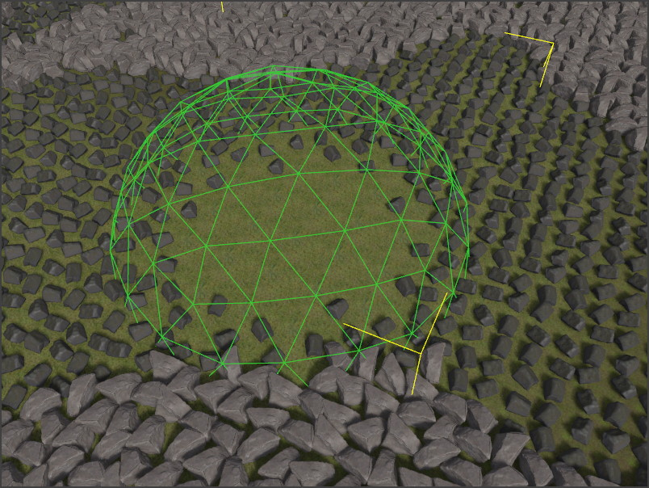

Procedural Volume Sphere Component
The procedural volume sphere component defines a sphere shaped volume in which the rules of ProcGen graphs are modified. Not every graph has to make use of this information, and what the exact effect is, is up to the ProcGen graph.
For more details see the chapter on ProcGen graph modifier nodes.
The image below shows a sphere volume used to set the density of an object type locally to zero. A fade out value of 0.5 makes the transition soft.

Component Properties
Value: A single number value. This is combined with the InputValue from the modifier node in the graph, using theBlendModeformula.SortOrder: If multiple modifier volumes overlap, theSortOrdercan be used to control in which order the volumes are evaluated.BlendMode: How to combineValuewith the InputValue from the modifier node in the graph. The Set mode just sets the result toValueand ignores the other operand.Radius: The radius of the sphere volume in which the modifier is active.FadeOutStart: The influence of the volume can fade out towards its edges, for smooth transitions. This value controls at what distance from the center point the fade out starts. So if this is set to zero, the fade out starts immediately at the middle (towards the closest edge), whereas if it is set to one, there will be no fade out, at all, and rather the influence of the volume stops abruptly at its border.